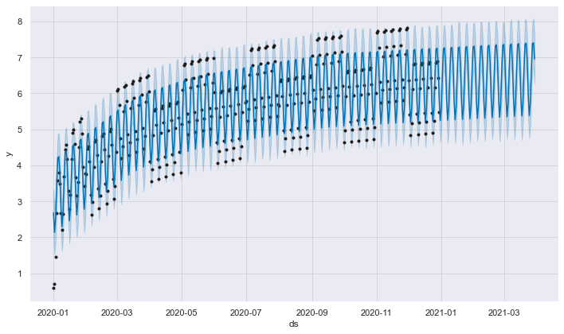

prophetを使ってみる
目次
prophetを使ってみる¶
install方法: prophet Installation
公式ドキュメントのQuick Start: prophet | Quick Start
注釈
K_DM - 時系列 > 予測 > ProphetでもProphetを扱っています。 こちらもご参照ください。
時系列データの作成¶
ダミーの時系列データを作成します。
import numpy as np
import pandas as pd
import seaborn as sns
from prophet import Prophet
sns.set(rc={"figure.figsize": (15, 8)})
---------------------------------------------------------------------------
ModuleNotFoundError Traceback (most recent call last)
Input In [1], in <cell line: 3>()
1 import numpy as np
2 import pandas as pd
----> 3 import seaborn as sns
4 from prophet import Prophet
6 sns.set(rc={"figure.figsize": (15, 8)})
ModuleNotFoundError: No module named 'seaborn'
実験用のデータを作成¶
date = pd.date_range("2020-01-01", periods=365, freq="D")
y = [np.cos(di.weekday()) + di.month % 2 + np.log(i + 1) for i, di in enumerate(date)]
df = pd.DataFrame({"ds": date, "y": y})
df.index = date
sns.lineplot(data=df)
<AxesSubplot:>
Prophetの訓練¶
m = Prophet(yearly_seasonality=False, daily_seasonality=True)
m.fit(df)
Initial log joint probability = -24.5101
<prophet.forecaster.Prophet at 0x7fe3b5d93d60>
Iter log prob ||dx|| ||grad|| alpha alpha0 # evals Notes
99 798.528 0.00821602 204.832 1 1 136
Iter log prob ||dx|| ||grad|| alpha alpha0 # evals Notes
136 799.486 0.00040141 83.1101 5.02e-06 0.001 225 LS failed, Hessian reset
158 799.529 0.00027729 48.4168 3.528e-06 0.001 291 LS failed, Hessian reset
199 799.55 3.15651e-05 54.5691 1 1 345
Iter log prob ||dx|| ||grad|| alpha alpha0 # evals Notes
204 799.553 3.54297e-05 56.7445 5.36e-07 0.001 397 LS failed, Hessian reset
267 799.556 6.19351e-08 44.7029 0.2081 1 490
Optimization terminated normally:
Convergence detected: relative gradient magnitude is below tolerance
予測用のデータを作成し予測を実行する¶
future = m.make_future_dataframe(periods=90)
forecast = m.predict(future)
fig1 = m.plot(forecast)
